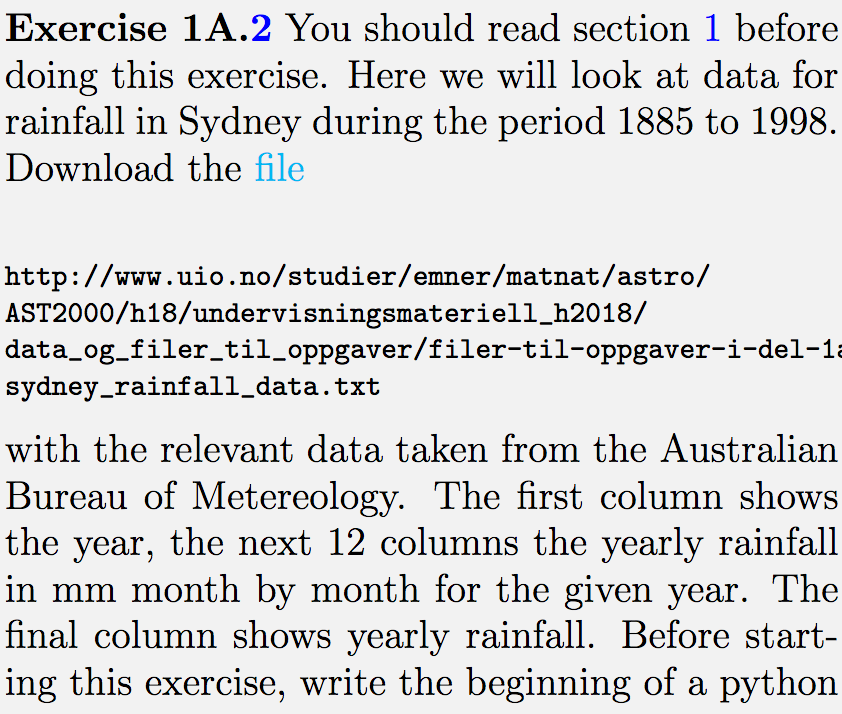

Forrige side🙂 🙁IntroduksjonFORUM
Hvis du er usikker på hvordan oppgavene løses, så kan du få et par hint i denne videoen
. Her er neste utfordring: 

Tenk igjen nøye gjennom hvordan du vil gå frem å løse dette. Det er viktig at du diskuterer denne med medstudenter. Her får du ikke noe svar, hvis du er veldig usikker, spør gruppelærer! Bergens tenketiden din til 3-4 minutter nå, fortsett senere når du skal gjøre oppgaven. Neste side